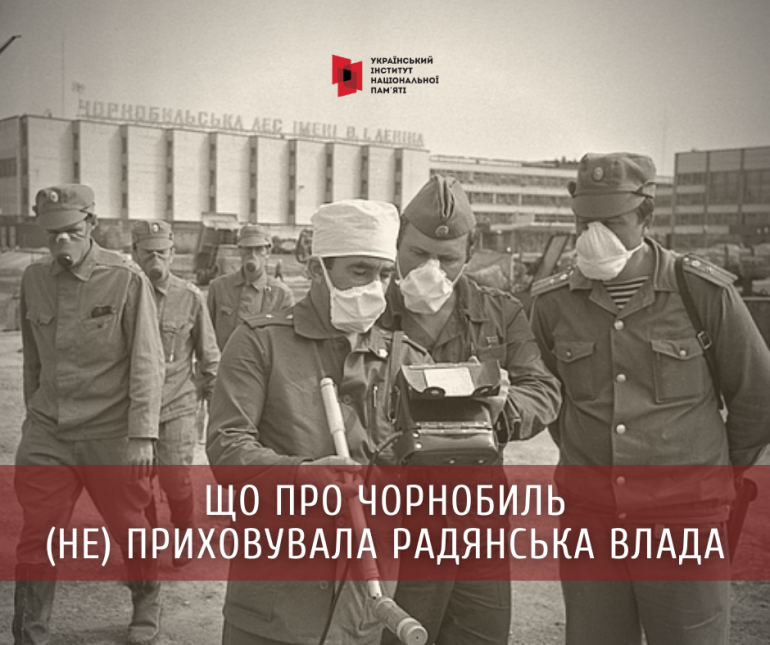
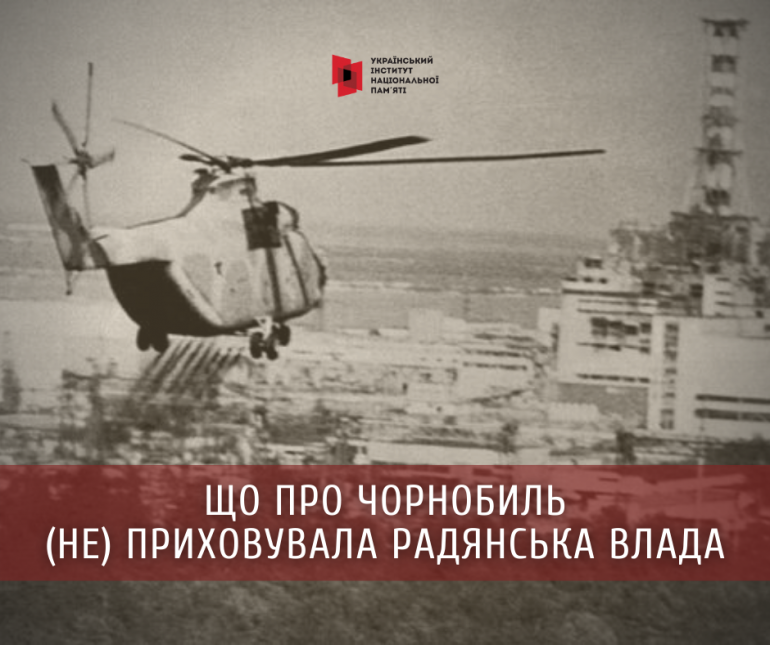

основні положення
- Що про Чорнобиль (не)приховувала радянська влада.
- Заборона поширення інформації про подію всередині країни
- Запобігання поширення інформації про подію за межами країни
Що про Чорнобиль (не)приховувала радянська влада.
Інформацію про найбільшу техногенну катастрофу в історії людства, спричинену вибухом на четвертому енергоблоці ЧАЕС 26 квітня 1986 року, партійно-державне керівництво та спецслужби СРСР одразу віднесли до категорії таємної.
Заборона поширення інформації про подію всередині країни
В одному з перших повідомлень Управління КДБ по місту Києву та області, надісланих до КДБ СРСР 26 квітня зазначалося:
«З метою недопущення витоку інформації, розповсюдження неправдивих та панічних чуток організований контроль вихідної кореспонденції, обмежений вихід абонентів на міжнародні лінії зв’язку».
Незважаючи на те, що уже 27 квітня пообіді почалася евакуація людей з Прип’яті та найближчих сіл, радянський уряд, а відповідно й «найчесніші» у світі ЗМІ мовчали про те, що сталося. 28 квітня о 21-00 в телепрограмі «Врємя» ведуча сповістила між іншим про те, що на Чорнобильській атомній електростанції сталася аварія внаслідок якої один з реакторів пошкоджено, що постраждалим надається допомога і створена урядова комісія. Таке лаконічне повідомлення мало створити ілюзію незначної аварії та що ситуація контролюється, тож немає підстав для хвилювання.
29 квітня 1986 року вийшло розпорядження начальника УКДБ УРСР по Києву та області Леоніда Бихова «про посилення роботи міськрайорганів на підприємствах та установах для припинення розповсюдження провокаційних та панічних чуток, застосування відносно їхніх інспіраторів найбільш рішучих заходів». Райвідділи щоденно до 11 та 17 годин повинні доповідати черговому УКДБ про кількість виявлених «болтунов», кількість проведених попереджувальних бесід та окремих попереджень осіб.
30 квітня газета «Правда» порушила мовчанку і опублікувала коротку замітку, фактично повторивши озвучене в програмі «Врємя», додавши, що відбулася евакуація людей з Прип’яті, а рівень радіації ретельно контролюється. Голова КДБ УРСР Степан Муха у доповідній записці першому секретарю ЦК КПУ Володимиру Щербицькому інформував про зусилля спецслужб напередодні Першого травня забезпечити належний контроль «за оперативною обстановкою у Київській, Чернігівській, Житомирській областях у зв’язку з надзвичайними подіями, що мали місце 26 квітня на Чорнобильській АЕС».
День солідарності трудящих був одним із найважливіших ідеологічних свят в Радянському Союзі, відтак влада не могла проігнорувати чи відмінити його відзначення. Попри те, що вітер гнав радіоактивну хмару на Київ, партійно-державні боси у Кремлі дали вказівку проводити велелюдний парад у місті.
«Він мав стати маркером для світової спільноти про те, що ситуацію контролюють, люди у безпеці і почуваються захищеними, – пише Сергій Плохій у книзі «Чорнобиль. Історія ядерної катастрофи», – а західні ЗМІ, поширюючи неправдиву інформацію про колосальні руйнування і тисячі жертв унаслідок аварії, стали частиною пропагандистської війни. Кадри усміхнених киян, які крокують центром міста, мали транслювати послання усім – партія контролює ситуацію».
Водночас ці кадри з газет стали красномовним свідченням злочину радянської влади проти людей: «Тисячі киян вийшли 1 травня на головну магістраль міста-героя – Хрещатик, – напише 2 травня газета «Вечірній Київ», – в урочистостях на Хрещатику взяли участь понад 120 тисяч киян та гостей столиці». Щодо цих цифр є певні застереження, бо на місцевому партійному рівні було встановлено квоту щодо кількості учасників акції від кожного з десяти районів Києва – у 2000 осіб (зазвичай цей показник коливався в межах 5 000 осіб). На ранок 3 травня в Україні було госпіталізовано 911 пацієнтів з симптомами радіаційного ураження. Наступного дня – 1345, серед яких – 330 дітей. Згодом радіологічні відділення київських лікарень заповнилися, і приймати пацієнтів з цим діагнозом почали за межами міста.
Інформаційну блокаду про подію на ЧАЕС контролювали на усіх рівнях. В самій зоні чорнобильська газета «Прапор Перемоги» так і не дала жодної інформації про трагедію. А останній номер вийшов із феєричними гаслами:
«Радянські люди можуть жити спокійно: партія глибоко усвідомлює свою відповідальність за майбутнє держави».
У травні 1986 року 5 відділ 6 Управління КДБ СРСР склав перелік відомостей (всього 26 пунктів) щодо подій на ЧАЕС, які підлягали засекреченню. Для того, щоб применшити масштаби трагедії, органи держбезпеки слідкували за нерозголошенням у пресі та приватних розмовах таких тем: причини аварії на 4-му енергоблоці ЧАЕС, дані про характер та обсяги руйнувань, кількість та склад суміші, виверженої із зруйнованого реактора під час вибуху, відомості про рівень радіоактивного забруднення у приміщеннях атомної електростанції та в 30-кілометровій зоні, діапазон дезактиваційних робіт у ході ліквідації наслідків аварії, статистику захворюваності на променеву хворобу серед персоналу станції, ліквідаторів, евакуйованого населення також факти масового отруєння та епідеміологічних захворювань, пов’язаних з аварією. До списку входили дані про обсяг державних капіталовкладень на консервацію 4-го енергоблоку, найменування організацій та кількість працівників, причетних до ліквідаторських робіт.
Для того, щоб приховати масштаби трагедії, влада вдалася до безпрецедентних заходів щодо приховування справжніх діагнозів постраждалим від променевого ураження. «За даними Шевченківського РВ УКДБ адміністрація Київської області та 25 лікарень, грунтуючись на вказівці Мінздоров’я УРСР в історіях хвороб пацієнтів з ознаками «променева хвороба вказують діагноз «вегетосудинна дистонія», – йдеться у Довідці 6 відділу УКДБ УРСР по м. Києву (від 13 травня 1986 року).
Запобігання поширення інформації про подію за межами країни
Маючи досвід замовчування фактів техногенних катастроф, які періодично відбувалися в Радянському Союзі, влада планувала й цього разу приховати інформацію. Проблемою для них стало те, що масштаб катастрофи був незрівнянно більший, в повітря відбувся викид 50 мільйонів кюрі радіоактивних речовин. До того ж ЧАЕС розташовувалася в європейській частині Союзу, вітер погнав викиди через Білорусь, Литву на Швецію та Фінляндію і далі. Відтак, Швеція першою відреагувала на підвищення рівня радіації в повітрі й вимагала від радянського уряду пояснень. Приховати факт аварії було неможливо в умовах назріваючого міжнародного скандалу.
КДБ у Києві отримував з Москви вказівки, що саме можна і треба говорити про аварію на ЧАЕС як для внутрішнього споживача, так і для західного. Серед причин наголошувалося виключно на людському факторі, натомість технологічні та конструкторські недоліки замовчувалися.
Новина про події на ЧАЕС стала топовою в західних та американських ЗМІ.
Експерти з ЦРУ 29 квітня 1986 року підготували звіт про подію на ЧАЕС, де назвали її найстрашнішою ядерною катастрофою в історії і наголосили, що чутки про тисячі загиблих та постраждалих в різний спосіб від аварії небезпідставні. Того ж дня адміністрація американського президента Рейгана запропонувала допомогу радянському дипломату, який прибув до Держдепу для обговорення питання ядерного озброєння. 30 квітня Рональд Рейган отримав повідомлення від Михайла Горбачова. Сергій Плохій у книзі “Чорнобиль. Історія ядерної катастрофи” наводить це повідомлення:
“СРСР заявляє, що витік радіоактивних матеріалів призвів до часткової евакуації населення...радіаційна обстановка стабілізувалася...рівні забруднення, незважаючи на часткове перевищення допустимих норм, не потребують спеціальних заходів для захисту населення”.
На пропозицію допомоги радянська пропаганда відгукнулася низкою публікацій у пресі про ядерні аварії за кордоном.
30 квітня у Москві для іноземних послів відбувся брифінг першого заступника міністра закордонних справ СРСР Анатолія Ковальова щодо подій на Чорнобильській АЕС. Загальна риторика полягала в тому, що усе не так страшно, як це намагається представити західна преса. Після чого, міністри закордонних справ республік отримали інструкції та роз’яснення стосовно інформування представниками місцевої влади іноземців про аварію. Основні тези зводилися до того, що здоров’ю нічого не загрожує, а “завдання полягало в недопущенні виїзду хворих людей, що не залишало б нашим ворогам шансів на використання випадкових інцидентів у антирадянських цілях”.
5 травня лідери Великої сімки під час зустрічі у Токіо підготували спільну заяву щодо Чорнобильської аварії:
“Ми закликаємо Уряд Радянського Союзу невідкладно надати всю інформацію, яку запросили наші та інші країни”.
Світ прагнув отримати правдиву інформацію про подію. З 27 квітня по 22 травня відбулося 22 візити іноземних дипломатів до Києва. Уся інформація була засекречена, щоб запобігти її витоку КДБ ретельно контролював переміщення іноземних кореспондентів та дипосіб, прослуховував телефонні дзвінки, блокував трансляцію телесюжетів.
8 травня до Києва, на запрошення радянської влади, приїхав генеральний директор МАГАТЕ Ханс Блінкс. Цей візит мав засвідчити з одного боку відкритість влади, з іншого, якщо все вдасться - продемонструвати, що не такі страшні масштаби аварії, як це подає західна преса. Довго вирішувалося питання яким чином доправити Блінкса до ЧАЕС. Автомобільними шляхами була небезпека потрапити в клуби радіоактивного пилу, який осів на землю. Дозиметри в таких місцях просто зашкалювали. З гелікоптера була видна секретна радіолокаційна станція “Дуга”. Після довгих консультацій Горбачов дав дозвіл на використання гелікоптера.
Сергій Плохій пише, що невідомо чи помітив Блікс “Дугу”, але він зафіксував у кабіні на висоті 400 метрів та на відстані 800 метрів від реактора випромінювання у 350 мілірентген за годину. За межами кабіни гелікоптера заміри не здійснювали та саму АЕС не відвідували. Бо приземлилися в Чорнобилі й звідти полетіли в Київ. На пресконференції, яку Блінкс дав у Москві він сказав:
“Ми змогли побачити людей, які працювали на полях, худобу на пасовищах, авто, які рухалися вулицями. Росіяни впевнені, що зможуть знезаразити територію. Вона знову стане придатною для сільського господарства”.
Інформаційні повідомлення КДБ рясніють історіями про пошук правди іноземцями. 23-25 травня 1986 року в Києві працювала знімальна група американського каналі “Сі Бі Ес”. За ними було встановлено цілодобовий нагляд. По маршруту пересування групи задіяно оперативників, агентів, які в разі потреби виступали в ролі звичайних перехожих або працівників станції й транслювали необхідну радянській владі інформацію.
“КДБ здійснив комплекс оперативних заходів в інтересах отримання інформації про наміри американців, контролю за їхніми діями, вивчення застосованої апаратури, доведення до іноземців вигідних відомостей”, - йшлося в доповідній голови КДБ УРСР Степана Мухи першому секретарю ЦК КПУ Володимиру Щербицькому.
Не маючи достовірної інформації, іноземні уряди відкликали своїх громадян, які перебували в Києві та Мінську. Переважно це були студенти. Представники “країн, які розвиваються”, спостерігаючи як їхні одногрупники виїжджають і собі почали звертатися в посольства з проханням про евакуацію. Це були студенти з Єгипту, Нігерії, Індії, Іраку. КДБ звітував стосовно них, що “вони просто хотіли домогтися безкоштовних квитків додому та довших канікул…”